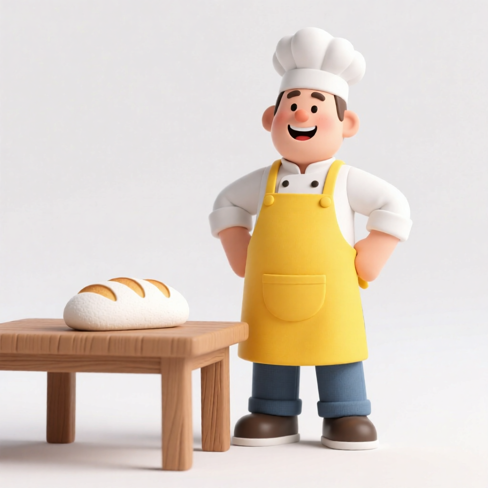
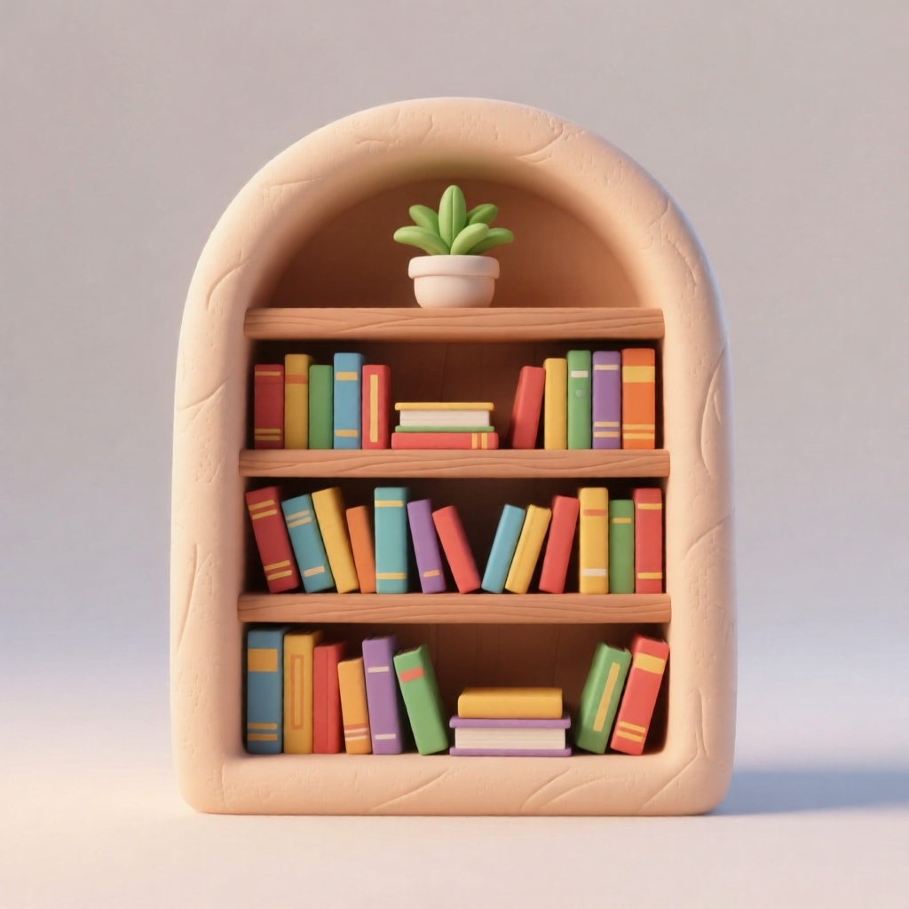
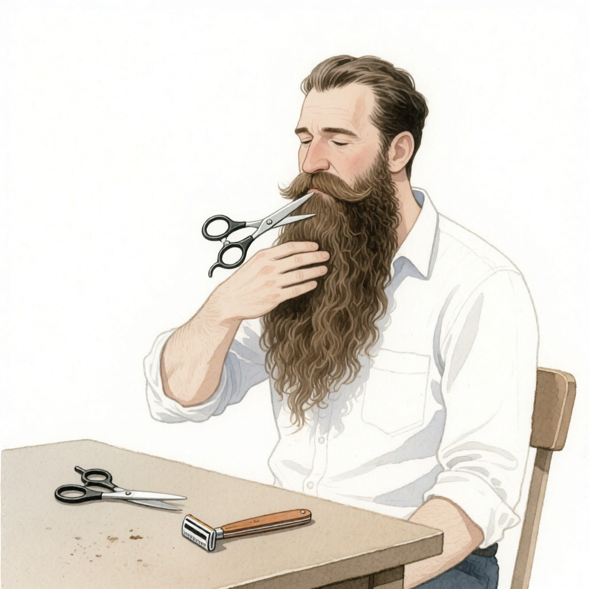
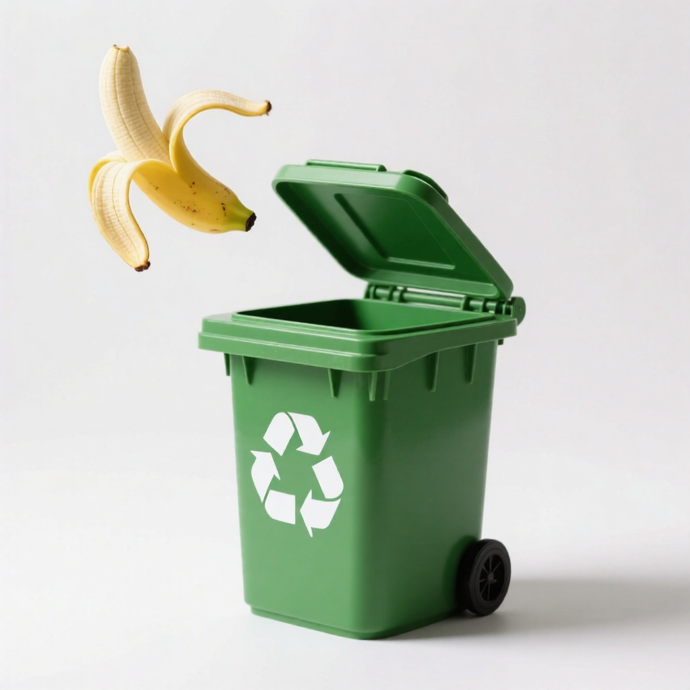

Day_121
2026-08-23 · 主题：日常生活与家居
每个词按 先思考 → 再输入 → 再输出 三步走。先想一遍，再看答案，最后动手用一次。
看中文，先在心里回忆 / 试着读出来：
围裙
评分 = 揭晓答案 + 展开输入内容
apron
n.
围裙

源自中古英语 'napron'，原意为 '桌布'。由于 'a napron' 被误听为 'an apron'，词首的 'n' 脱落，最终演变为现代英语的 'apron'。
- 谐音法：'apron' 听起来像 '爱扑软'，想象你穿着围裙扑向软软的蛋糕面团。
- 拆分法：a + pron，'a' 是 '一个'，'pron' 像 'pro'（专业），联想：一个专业的厨师穿着围裙。
- 场景联想法：想象妈妈在厨房里，穿着带花边的围裙，一边哼歌一边煎鸡蛋，围裙上沾着面粉。
可数名词，常与 'wear' 或 'put on' 搭配，表示穿围裙的动作。
- ❌
I need to wear a apron.✅ I need to wear an apron.apron 以元音音素开头，不定冠词要用 'an'。 - ❌
He put on his apron and went to work in the garden.✅ He put on his apron and went to work in the kitchen.apron 通常用于厨房或烹饪场景，花园里更常用 'gardening apron' 或 'overalls'。
- CET-4 完形填空：注意冠词 'an' 的用法，apron 是元音音素开头。
- 高考阅读：可能出现在描述家庭生活或烹饪场景的短文中，需理解其功能。
- She tied her apron tightly before starting to bake the cake.
她开始烤蛋糕前，把围裙系得紧紧的。 - The chef's apron was stained with tomato sauce after a long shift.
厨师的长围裙在长时间轮班后沾满了番茄酱。
- overalls（工装裤）— apron 只遮住身体前部，overalls 是连体工装，覆盖全身。
把 apron 填回句子：
She tied her ______ tightly before starting to bake the cake.
✓ 正确答案：apron
📝 完整句：She tied her apron tightly before starting to bake the cake.
🀄 译文：她开始烤蛋糕前，把围裙系得紧紧的。
看中文，先在心里回忆 / 试着读出来：
书柜
评分 = 揭晓答案 + 展开输入内容
bookcase
n.
书柜

bookcase 由 book（书）和 case（容器）组合而成，源自中古英语 bok 和古法语 casse，意为存放书籍的家具。
- 谐音法：bookcase 读作 '布克凯斯'，想象一个布克（书）被凯斯（箱子）装起来，就是书柜。
- 拆分法：book + case，书 + 箱子 = 装书的箱子，即书柜。
- 场景联想法：想象你走进图书馆，看到一排排高大的书柜，上面摆满了书，你伸手去拿一本，这就是 bookcase。
bookcase 是可数名词，通常指有隔板的家具，用于存放书籍。
- ❌
There are many books on the bookcase.✅ There are many books in the bookcase.书放在书柜里用 in，而不是 on。
- CET-4/高考完形填空：常考 bookcase 与 bookshelf 的辨析，注意上下文是否强调封闭性。
- 写作：在描述家居环境时，可用 bookcase 体现细节，如 'a wooden bookcase against the wall'。
- I bought a new bookcase to organize my growing collection of novels.
我买了一个新书柜来整理我日益增多的小说收藏。 - The bookcase in the living room is filled with old textbooks and photo albums.
客厅里的书柜塞满了旧课本和相册。
- bookshelf（书架）— bookcase 通常指有门或封闭式的书柜，而 bookshelf 多指开放式书架。
把 bookcase 填回句子：
I bought a new ______ to organize my growing collection of novels.
✓ 正确答案：bookcase
📝 完整句：I bought a new bookcase to organize my growing collection of novels.
🀄 译文：我买了一个新书柜来整理我日益增多的小说收藏。
看中文，先在心里回忆 / 试着读出来：
温室，玻璃暖房
评分 = 揭晓答案 + 展开输入内容
greenhouse
nUK /griːnhaʊs/ US /ɡrinhaʊs/
温室，玻璃暖房
源自中古英语，由 green（绿色）和 house（房子）组合而成，字面意思就是“绿色的房子”。最初指种植绿色植物的暖房，后来引申为“温室效应”中的温室。
- 谐音法：green（格林）+ house（豪斯）→ 格林家的豪斯是个种满绿植的温室。
- 拆分法：green（绿色）+ house（房子）→ 绿色的房子，里面种满植物，就是温室。
- 场景联想法：想象一个寒冷的冬天，你走进一个玻璃房子，里面温暖如春，到处都是绿色的植物，这就是 greenhouse。
作名词，常与 the 连用表示温室效应（the greenhouse effect），也可指具体的温室建筑。
- ❌
The greenhouse effect is caused by greenhouse gases.✅ The greenhouse effect is caused by greenhouse gases.此句正确，但常见错误是误将 greenhouse 当作形容词，实际上它本身就是名词，可作定语。 - ❌
He built a green house in his backyard.✅ He built a greenhouse in his backyard.green house 是“绿色的房子”，greenhouse 才是“温室”，注意连写与分开写意义不同。
- CET-4 阅读中常考 greenhouse effect 和 greenhouse gases 的概念理解。
- 高考完形填空可能考查 greenhouse 与 glasshouse 的辨析。
- The farmer grows tomatoes in his greenhouse during the winter.
冬天，农民在温室里种植西红柿。 - The greenhouse effect is causing global temperatures to rise.
温室效应正在导致全球气温上升。
- glasshouse（玻璃温室）— greenhouse 更常用，glasshouse 多用于英式英语，且常指大型商业温室。
把 greenhouse 填回句子：
The farmer grows tomatoes in his ______ during the winter.
✓ 正确答案：greenhouse UK /griːnhaʊs/ US /ɡrinhaʊs/
📝 完整句：The farmer grows tomatoes in his greenhouse during the winter.
🀄 译文：冬天，农民在温室里种植西红柿。
看中文，先在心里回忆 / 试着读出来：
习惯的；惯常的
评分 = 揭晓答案 + 展开输入内容
accustomed
adj./ə'kʌstəmd/
习惯的；惯常的
源自拉丁语 'consuetudo'（习惯），通过古法语 'acostumer' 进入英语。字面意思是 '使习惯于'，前缀 ad- 表示 '朝向'，'custom' 是 '习惯'。
- 谐音法：'啊卡斯特姆的' → 想象一个叫卡斯特姆的人，他每天固定时间做固定的事，'啊，卡斯特姆的'习惯。
- 拆分法：ac（加强）+ custom（习惯）+ ed（形容词后缀）→ 被习惯加强的 → 习惯的。
- 场景联想法：你每天早上7点起床，闹钟一响就自动坐起来，这个动作就是 'accustomed' 的体现。
常用搭配 'be/get accustomed to'，to 是介词，后接名词或动名词。
- ❌
I am accustomed to get up early.✅ I am accustomed to getting up early.to 是介词，后接动名词，不是不定式。 - ❌
He is accustomed with the cold weather.✅ He is accustomed to the cold weather.固定搭配是 accustomed to，不是 with。
- CET-4 完形填空：常考 'be accustomed to' 的介词搭配，选项可能给 to/with/for。
- 高考写作：可用 'be accustomed to' 替换 'be used to'，提升词汇多样性。
- She is accustomed to waking up early every morning.
她习惯每天早上早起。 - After living in the city for years, he became accustomed to the noise.
在城市生活多年后，他习惯了噪音。
- used to（过去常常）— accustomed to 强调状态，used to 强调过去习惯且现在不再。
- habitual（习惯性的）— habitual 更强调行为本身，accustomed 更强调适应状态。
把 accustomed 填回句子：
She is ______ to waking up early every morning.
✓ 正确答案：accustomed /ə'kʌstəmd/
📝 完整句：She is accustomed to waking up early every morning.
🀄 译文：她习惯每天早上早起。
看中文，先在心里回忆 / 试着读出来：
阳台
评分 = 揭晓答案 + 展开输入内容
balcony
n.UK /bælkəni/ US /bælkənɪ/
阳台
来自意大利语 balcone，原指‘大窗户’或‘阳台’，源自日耳曼语 balk（意为‘梁、横木’），因为早期的阳台是用横木搭建的。
- 谐音法：谐音‘掰开你’，想象你掰开阳台的栏杆，探出头去看风景。
- 拆分法：bal + cony，bal 像‘ball（球）’，cony 像‘cony（兔子）’，一只兔子在阳台上玩球。
- 场景联想法：夏天傍晚，你坐在阳台上，手里拿着一杯冰柠檬水，看着楼下的街道。
可数名词，通常指建筑物外部的平台，有栏杆或围墙。
- ❌
I am sitting in the balcony.✅ I am sitting on the balcony.在阳台上用介词 on，因为阳台是一个平面，不是封闭空间。
- CET-4 完形填空常考介词搭配 on the balcony。
- 高考阅读中可能出现 balcony 作为场景描述词，需理解其与 terrace 的区别。
- She stood on the balcony and waved goodbye to her friends.
她站在阳台上，向朋友们挥手告别。 - The hotel room has a small balcony with a view of the ocean.
酒店房间有一个小阳台，可以看到海景。
- terrace（露台）— terrace 通常指地面或屋顶的平坦露天区域，面积较大；balcony 是突出于建筑外墙的狭长平台。
把 balcony 填回句子：
She stood on the ______ and waved goodbye to her friends.
✓ 正确答案：balcony UK /bælkəni/ US /bælkənɪ/
📝 完整句：She stood on the balcony and waved goodbye to her friends.
🀄 译文：她站在阳台上，向朋友们挥手告别。
看中文，先在心里回忆 / 试着读出来：
地下室
评分 = 揭晓答案 + 展开输入内容
basement
n.
地下室
来自古法语 'bas'（低） + 拉丁语后缀 '-mentum'（表示场所或结果）。字面意思就是 '低处的地方'，后来演变为指建筑物地面以下的房间。
- 谐音法：'背死门'——地下室的门背对着你，一进去就感觉要死，又黑又闷。
- 拆分法：base（基础）+ ment（名词后缀）→ 房子的基础层就是地下室。
- 场景联想法：想象你家的房子像一块蛋糕，地下室就是最底下那层巧克力底座，上面才是客厅和卧室。
basement 通常指完全或部分位于地面以下的楼层，常用来储物、放洗衣机或当游戏室。
- ❌
I live in the cellar.✅ I live in the basement apartment.cellar 通常不是住人的地方，basement 可以指有居住功能的地下室。 - ❌
The basement is under the ground floor.✅ The basement is below the ground floor.under 强调正下方，below 更通用，表示位置更低。
- CET-4 阅读中可能出现在描述房屋结构或自然灾害（如洪水）的语境中。
- 写作中可用于描述家庭生活场景，如 'We have a party in the basement.'
- We store old furniture and holiday decorations in the basement.
我们把旧家具和节日装饰品存放在地下室里。 - The basement flooded after the heavy rain, so we had to pump out the water.
大雨过后地下室淹了，我们不得不把水抽出去。
- cellar（地窖）— cellar 通常指专门用来储存食物或酒的地下室，而 basement 更通用，可以住人或做其他用途。
把 basement 填回句子：
We store old furniture and holiday decorations in the ______.
✓ 正确答案：basement
📝 完整句：We store old furniture and holiday decorations in the basement.
🀄 译文：我们把旧家具和节日装饰品存放在地下室里。
看中文，先在心里回忆 / 试着读出来：
胡须，胡子
评分 = 揭晓答案 + 展开输入内容
beard
n.UK /bɪəd/ US /bɪrd/
胡须，胡子

源自古英语 beard，与德语 Bart、拉丁语 barba 同源，都来自原始印欧语 *bʰardʰā，意为“胡须”。拉丁语 barba 还演变成 barber（理发师）——专门打理胡子的人。
- 谐音法：beard 谐音“比尔得”，想象比尔·盖茨留着一把大胡子，跟朋友说“这是我比尔得的胡子”。
- 拆分法：把 beard 拆成 b + ear + d：b 像一个人，ear 是耳朵，d 是“的”，人耳朵旁边的毛就是胡须。看到 ear 就记住胡子长在脸的两侧。
- 场景联想法：想象圣诞老人坐在壁炉边，长长的白胡子垂到胸前，上面还挂着一滴牛奶。这个画面一出现，beard 就忘不掉了。
beard 是可数名词，特指下巴及两颊的胡须；上唇的小胡子用 moustache。另外 beard 做动词时意为“勇敢面对”，但极不常用。
- ❌
He has a beard on his nose.✅ He has a moustache under his nose.鼻子下方的胡须是 moustache，不是 beard。 - ❌
The man has long beard.✅ The man has a long beard.beard 是可数名词，指一个人的胡子时要用 a beard 或复数 beards。
- 阅读理解中，描述人物外貌时会出现 beard，常考它与 moustache、whiskers 的区分。
- 书面表达（人物介绍）中，使用 have a beard 或 wear a beard 可增加细节，但注意冠词不能丢。
- His grandfather has a long gray beard that reaches his chest.
他祖父留着长到胸口的灰白胡须。 - She gave her boyfriend a beard trimmer for his birthday.
她送给男朋友一把胡须修剪器作为生日礼物。
- moustache（小胡子，唇须）— beard 指下巴和脸颊的胡须，moustache 只指上唇的胡须，位置不同，不可混用。
- whiskers（络腮胡；(动物的)须）— whiskers 常指猫、鼠等动物嘴边长的长须，形容人时多指两颊连着的络腮胡子，比 beard 更口语。
把 beard 填回句子：
His grandfather has a long gray ______ that reaches his chest.
✓ 正确答案：beard UK /bɪəd/ US /bɪrd/
📝 完整句：His grandfather has a long gray beard that reaches his chest.
🀄 译文：他祖父留着长到胸口的灰白胡须。
看中文，先在心里回忆 / 试着读出来：
垃圾箱；箱子
评分 = 揭晓答案 + 展开输入内容
bin
n.
垃圾箱；箱子

来自古英语 'binne'，意为 '篮子、马槽'，最初指一种容器。后来在英式英语中特指 '垃圾箱'，与美式英语的 'trash can' 对应。
- 谐音法：'bin' 发音像 '饼'，想象你把吃剩的饼扔进垃圾箱。
- 拆分法：b + in，b 像垃圾桶的盖子，in 表示 '在里面'，盖子盖住垃圾在里面。
- 场景联想法：厨房里，你打开垃圾桶（bin）的盖子，把苹果核扔进去，盖子 '啪' 一声关上。
在英式英语中，'bin' 是 '垃圾箱' 的常用词；美式英语更常用 'trash can' 或 'garbage can'。
- ❌
I put the rubbish in the bin.✅ I put the rubbish in the bin.这个句子本身正确，但注意 'rubbish' 是英式用法，美式用 'trash' 或 'garbage'。 - ❌
He threw the paper into the bin.✅ He threw the paper into the bin.句子正确，但注意 'bin' 前通常用 'the' 或 'a'，除非是专有名词。
- CET-4 阅读中可能作为生活场景词汇出现，注意区分英式与美式表达。
- 高考完形填空中可能考察 'bin' 与 'box'、'can' 等近义词的辨析。
- Please throw the empty bottle into the recycling bin.
请把空瓶子扔进回收箱。 - The kitchen bin is full and needs to be emptied.
厨房的垃圾箱满了，需要清空。
- can（罐子；垃圾桶（美式））— bin 是英式英语中 '垃圾箱' 的常用词，而 can 在美式英语中更常见，如 'trash can'。
把 bin 填回句子：
Please throw the empty bottle into the recycling ______.
✓ 正确答案：bin
📝 完整句：Please throw the empty bottle into the recycling bin.
🀄 译文：请把空瓶子扔进回收箱。
看中文，先在心里回忆 / 试着读出来：
身体或情感的损伤；受伤；损害
评分 = 揭晓答案 + 展开输入内容
injurey
n./ˈɪndʒəri/
身体或情感的损伤；受伤；损害

来自拉丁语 injuria，意为“不公正”。由 in-（不）+ jus/juris（法律、权利）+-ia 组成，本指“侵犯他人权利”，后引申为“伤害、损伤”.
- 谐音法：“injury”发音像“硬折”，想象骨头硬生生折断，就是受伤。
- 拆分法：in（进入）+ jury（陪审团）——你受伤后要进法院，由陪审团裁定赔偿。
- 场景联想法：看到运动员被担架抬出场外，电视屏幕上打出“INJURY”红色警示，记住这个词。
injury 是可数名词，常与 suffer/sustain 搭配表示受伤；have an injury 也可以接受，注意用不定冠词 an injury。
- ❌
He injured his injury.✅ He injured his leg.injure 的宾语是身体部位，不能是 injury 本身。 - ❌
She has injury on her arm.✅ She has an injury on her arm.injury 是可数名词，单数前需加冠词 a/an。
- CET-4 词汇题常考固定搭配 suffer/sustain an injury，注意与 hurt, wound, damage 的辨析。
- 写作中可用 cause injury 替换 simple hurt，提升表达正式度。
- He suffered a serious injury in the car accident.
他在车祸中受了重伤。 - The injury to her ankle kept her out of the game.
她脚踝的伤让她无法参加比赛。
- wound（伤口）— wound 指由于切割、射击等造成的外伤，通常有破口；injury 涵盖更广，包括内伤、挫伤等。
- hurt（伤痛（动词/名词））— hurt 口语常用，可作动词或名词；injury 更正式，且作为名词时指具体的伤害。
把 injury 填回句子：
He suffered a serious ______ in the car accident.
✓ 正确答案：injury /ˈɪndʒəri/
📝 完整句：He suffered a serious injury in the car accident.
🀄 译文：他在车祸中受了重伤。
看中文，先在心里回忆 / 试着读出来：
恢复，康复；重新获得（体力、意识、数据等）
评分 = 揭晓答案 + 展开输入内容
recover
v./rɪˈkʌvər/
恢复，康复；重新获得（体力、意识、数据等）

Recover 来自古法语 recoverer，最终源于拉丁语 recuperare，由 re-（再，回来）+ capere（拿取）组成，字面意思是“重新拿回”。最早用于拿回失去的财产，后来引申为恢复健康或精力。
- 谐音法：谐音“瑞克服”——想象一个叫瑞克的人，靠顽强意志“克服”了病魔，成功康复。
- 拆分法：re-（再）+ cover（覆盖）→ 把失去的体力“重新覆盖”回来；生病时裹好被子（cover）好好休息，才能再次（re）康复。
- 场景联想法：生病请假躺在床上，裹着厚被子（cover）昏睡；醒来后感觉好多了，于是“再（re）”次活力满满——这就是 recover。
recover 作不及物动词时用 recover from sth；作及物动词时直接跟宾语，如 recover lost data。
- ❌
He recovered his illness after taking medicine.✅ He recovered from his illness after taking medicine.表示“从疾病中康复”要用 recover from sth，不能把疾病直接放在 recover 后面作宾语。 - ❌
The doctors recovered him from pneumonia.✅ The doctors cured him of pneumonia.recover 一般不用作“治愈某人”的及物动词；表示医生“治好”某人，要用 cure sb of sth。
- CET-4 完形/阅读中高频出现 recover from 搭配，注意介词 from。
- 写作中表达“恢复健康”可用 recover/recover from，替换 get better，使表达更正式。
- After the surgery, it took him three months to fully recover and return to his normal routine.
手术之后，他花了三个月时间才完全康复，回归正常生活。 - Police have recovered the stolen paintings from a warehouse outside the city.
警方已在城外的一个仓库里找回了被盗的画作。
- heal（治愈，愈合）— recover 强调病人自己从疾病中复原，主语是人；heal 强调伤口或组织愈合，主语常是伤口或损伤。
- regain（重新获得）— recover 可指恢复健康，也可指找回丢失物；regain 更正式，强调重新获得失去的状态或能力，如 regain balance。
把 recover 填回句子：
After the surgery, it took him three months to fully ______ and return to his normal routine.
✓ 正确答案：recover /rɪˈkʌvər/
📝 完整句：After the surgery, it took him three months to fully recover and return to his normal routine.
🀄 译文：手术之后，他花了三个月时间才完全康复，回归正常生活。
看中文，先在心里回忆 / 试着读出来：
治疗，疗法；对待，处理
评分 = 揭晓答案 + 展开输入内容
treatment
n./ˈtriːtmənt/
治疗，疗法；对待，处理

来自古法语 'traitement'，源于拉丁语 'tractare'（处理、对待），由 'tract-'（拉、拖）加后缀 '-ment' 构成，本意是“处理某事物的方式”，后引申为“医疗上的处理”。
- 谐音法：谐音“踹他门特”，想象病人踹开医院的门大喊“我要治疗！”，记住 treatment 是治疗。
- 拆分法：treat（对待）+ ment（名词后缀），对待病人的方式就是治疗，所以 treatment 是治疗。
- 场景联想法：医生给你开药、打针、手术，这些都是 treatment，就像把病“处理”掉一样。
表示“治疗某种疾病”时，常用 treatment for + 疾病；表示“对待某人/某物”时，常用 treatment of + 对象。
- ❌
He is under treatment of a serious illness.✅ He is under treatment for a serious illness.表示“因……接受治疗”时用 for，不用 of。 - ❌
She received a treatment for her back pain.✅ She received treatment for her back pain.表示“接受治疗”时 treatment 通常不可数，不加 a；只有指某种特定疗法时才用 a treatment。
- 完形填空：常考 treatment 与 cure、therapy 的词义辨析，注意语境是过程还是结果。
- 阅读理解：medical treatment 是高频短语，注意 receive/undergo 等搭配动词。
- The new treatment for cancer has shown promising results in clinical trials.
这种新的癌症治疗方法在临床试验中显示了令人鼓舞的结果。 - The treatment of prisoners should respect their basic human rights.
对待囚犯的方式应尊重他们的基本人权。
- cure（治愈）— treatment 指治疗的过程或具体治疗方案；cure 指治愈的结果。a treatment for cancer 是正确的，指癌症治疗方案；a cure for cancer 才强调彻底治愈癌症。
- therapy（疗法）— therapy 更多指非药物的康复疗法，如 physical therapy；treatment 更宽泛，包括药物、手术等。
把 treatment 填回句子：
The new ______ for cancer has shown promising results in clinical trials.
✓ 正确答案：treatment /ˈtriːtmənt/
📝 完整句：The new treatment for cancer has shown promising results in clinical trials.
🀄 译文：这种新的癌症治疗方法在临床试验中显示了令人鼓舞的结果。
看中文，先在心里回忆 / 试着读出来：
超重的，体重超过正常标准的
评分 = 揭晓答案 + 展开输入内容
overweight
adj.UK /ˌəʊvəˈweɪt/ US /ˌoʊvərˈweɪt/
超重的，体重超过正常标准的

由前缀 over-（超过）和名词 weight（重量）构成。weight 源自古英语 gewiht，本义是“重量”；表示“称重”的是动词 weigh。字面意思是“重量超过标准”。
- 谐音法：谐音'欧文卫特'，想象一个叫欧文的小伙子特别胖，体重超重，需要特别关注体重。
- 拆分法：over（超过）+ weight（重量）→ 超过正常重量 → 超重的。
- 场景联想法：想象体检时医生指着体重秤说 'You are overweight'，秤的指针越过红色警戒线，你心下一惊。
常用作形容词，可作定语或表语，如 an overweight person / He is overweight。也可作动词表示'使负担过重'，但使用较少。
- ❌
She is 20 kilograms overweights.✅ She is 20 kilograms overweight.overweight 是形容词，没有复数形式。 - ❌
He overweights 80kg.✅ He weighs 80kg and is overweight.overweight 不能直接接重量，表示'超重多少'可用 be overweight by... 或分句。
- 高考/四级阅读中常以形容词形式出现在健康话题中，注意与 obesity、obese 等词区分。
- 写作中可用于描述健康问题，可搭配 overweight and obesity 以提升表达。
- According to the latest report, nearly 30% of adults in the country are overweight.
根据最新报告，该国近30%的成年人超重。 - The doctor advised him to exercise regularly because he was overweight.
医生建议他经常锻炼，因为他超重了。
- obese（肥胖的）— obese 指严重肥胖，通常比 overweight 程度更重，且医学上有明确的 BMI 标准（如≥30）。
- fat（胖的）— fat 语气口语化、带贬义，overweight 更中性、正式，常用于健康语境。
把 overweight 填回句子：
According to the latest report, nearly 30% of adults in the country are ______.
✓ 正确答案：overweight UK /ˌəʊvəˈweɪt/ US /ˌoʊvərˈweɪt/
📝 完整句：According to the latest report, nearly 30% of adults in the country are overweight.
🀄 译文：根据最新报告，该国近30%的成年人超重。
选词填空，注意词性转化：
📌 答案：aproned —
📝 完整句：The baker was aproned with flour from head to toe.
🔬 解题思路
① 确定句子空缺处需要什么词性（主语/谓语/宾语/定语/状语）。
② 原词 apron（围裙）需要转化为 aproned 形式。词性转化
③ 将 aproned 代入原句，检查语法和语义是否通顺。
🎯 考点：
📚 题目来源：CET-4 / 考研英语 词性转化专项练习
🔎 选项辨析：
⚠ 干扰项分析
apron（围裙）：这是原形，需要派生形式
apronful（）：词性/形式不匹配
apronless（）：这是复数形式，此处需要单数/其他形式
💡 解析：aproned 是形容词，表示 '穿着围裙的'，这里描述状态。
选词填空，注意词性转化：
📌 答案：bookcase — 书柜
📝 完整句：The old bookcase was full of dust and forgotten novels.
🔬 解题思路
题目中给出的词 bookcase 已经符合句子的词性要求，不需要额外的词形变化。直接填入原形即可。
🎯 考点：
📚 题目来源：CET-4 / 考研英语 词性转化专项练习
🔎 选项辨析：
⚠ 干扰项分析
bookshelf（）：词性/形式不匹配
bookstore（）：词性/形式不匹配
bookworm（）：词性/形式不匹配
💡 解析：bookcase 指书柜，符合语境；bookshelf 是书架，bookstore 是书店，bookworm 是书虫。
选词填空，注意词性转化：
📌 答案：greenhouse — 温室，玻璃暖房
📝 完整句：Burning fossil fuels releases large amounts of greenhouse gases.
🔬 解题思路
题目中给出的词 greenhouse 已经符合句子的词性要求，不需要额外的词形变化。直接填入原形即可。
🎯 考点：
📚 题目来源：CET-4 / 考研英语 词性转化专项练习
🔎 选项辨析：
⚠ 干扰项分析
green（绿色的）：词性/形式不匹配
greenhouses（）：这是复数形式，此处需要单数/其他形式
greening（）：这是现在分词形式，此处需要名词/形容词
💡 解析：greenhouse gases 是固定搭配，意为“温室气体”，greenhouse 作定语修饰 gases。
选词填空，注意词性转化：
📌 答案：accustomed — 习惯的；惯常的
📝 完整句：After a few weeks, he finally accustomed to the new environment.
🔬 解题思路
题目中给出的词 accustomed 已经符合句子的词性要求，不需要额外的词形变化。直接填入原形即可。
🎯 考点：
📚 题目来源：CET-4 / 考研英语 词性转化专项练习
🔎 选项辨析：
⚠ 干扰项分析
accustom（使习惯）：词性/形式不匹配
custom（习惯，风俗；海关）：词性/形式不匹配
customary（）：词性/形式不匹配
💡 解析：accustomed 是形容词，表示 '习惯的'；accustom 是动词原形；custom 是名词；customary 是形容词但侧重 '惯例的'。
选词填空，注意词性转化：
📌 答案：balconies —
📝 完整句：The hotel has several rooms with private balconies.
🔬 解题思路
① 确定句子空缺处需要什么词性（主语/谓语/宾语/定语/状语）。
② 原词 balcony（阳台）需要转化为 balconies 形式。词性转化
③ 将 balconies 代入原句，检查语法和语义是否通顺。
🎯 考点：
📚 题目来源：CET-4 / 考研英语 词性转化专项练习
🔎 选项辨析：
⚠ 干扰项分析
balcony（阳台）：这是原形，需要派生形式
balconied（）：这是过去式/过去分词，此处需要其他词性
balcon（）：词性/形式不匹配
💡 解析：several 后接可数名词复数，balcony 的复数是 balconies。
选词填空，注意词性转化：
📌 答案：basement — 地下室
📝 完整句：The house has a large basement where we store wine.
🔬 解题思路
题目中给出的词 basement 已经符合句子的词性要求，不需要额外的词形变化。直接填入原形即可。
🎯 考点：
📚 题目来源：CET-4 / 考研英语 词性转化专项练习
🔎 选项辨析：
⚠ 干扰项分析
base（基础；基地）：需要名词形式（-ment）
basal（）：需要名词形式（-ment）
baseless（）：这是复数形式，此处需要单数/其他形式
💡 解析：basement 是名词，指地下室；base 是基础；basal 是形容词；baseless 是无根据的。
选词填空，注意词性转化：
📌 答案：bearded —
📝 完整句：The old sailor's bearded face showed years of hardship.
🔬 解题思路
① 确定句子空缺处需要什么词性（主语/谓语/宾语/定语/状语）。
② 原词 beard（胡须，胡子）需要转化为 bearded 形式。词性转化
③ 将 bearded 代入原句，检查语法和语义是否通顺。
🎯 考点：
📚 题目来源：CET-4 / 考研英语 词性转化专项练习
🔎 选项辨析：
⚠ 干扰项分析
beard（胡须，胡子）：这是原形，需要派生形式
beardless（）：这是复数形式，此处需要单数/其他形式
beards（）：这是复数形式，此处需要单数/其他形式
💡 解析：bearded 是形容词“有胡须的”，修饰 face；beard 是名词，beardless 是“无须的”，beards 是复数名词。
选词填空，注意词性转化：
📌 答案：bin — 垃圾箱；箱子
📝 完整句：She decided to bin the old clothes instead of donating them.
🔬 解题思路
题目中给出的词 bin 已经符合句子的词性要求，不需要额外的词形变化。直接填入原形即可。
🎯 考点：
📚 题目来源：CET-4 / 考研英语 词性转化专项练习
🔎 选项辨析：
⚠ 干扰项分析
binned（）：这是过去式/过去分词，此处需要其他词性
binning（）：这是现在分词形式，此处需要名词/形容词
bins（）：这是复数形式，此处需要单数/其他形式
💡 解析：这里需要动词原形，'bin' 作为动词意为 '扔掉'，其他选项是时态或形式变化。
中文梗概
读完整篇 → 进入 ④ 输出挑战。
今日学习报告
先思考 → 再输入 → 再输出，完成度记录在这里。